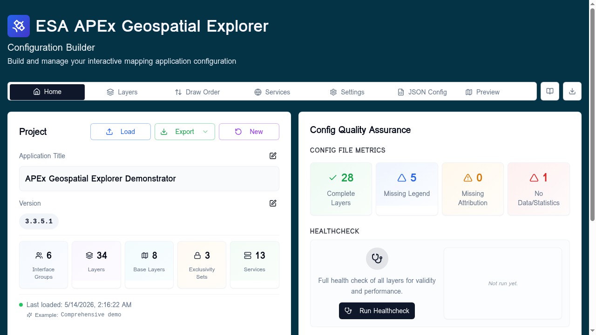
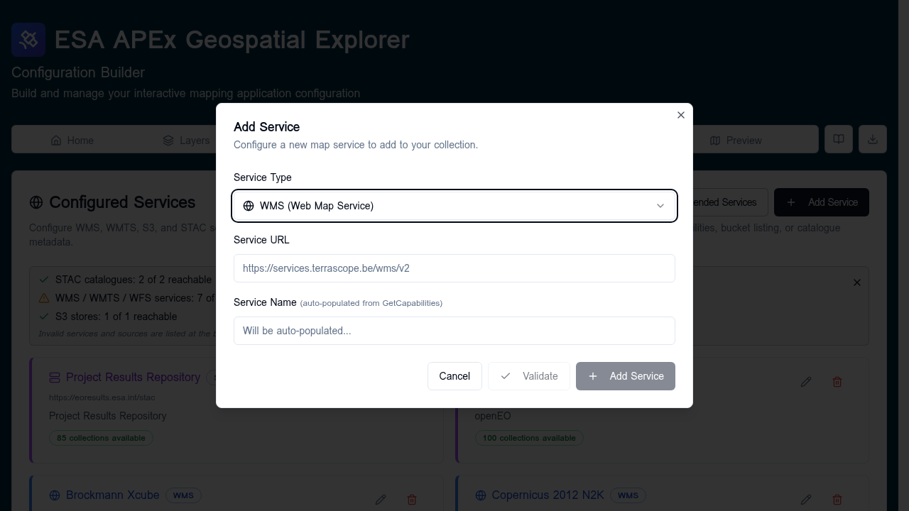
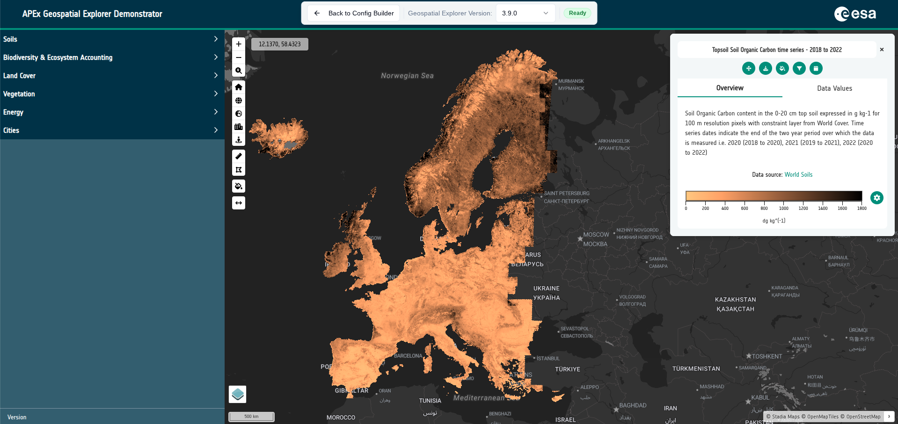

Build your first config¶
This walk-through builds a minimal but complete APEx Geospatial Explorer configuration from scratch — one base layer, one interface group, one data layer, validated and previewed.
If you would rather start from a working example, see Loading and saving and load the Comprehensive demo.
Follow along
Most screenshots in this tutorial were captured against the Comprehensive demo so you can see what a finished config looks like at each step.
Before you start¶
You need:
- The Configuration Builder open in your browser.
- The URL of one WMTS or WMS endpoint you want to show as a layer (or use the recommended-services list — see Recommended services).
The whole walk-through takes about 10 minutes.
1. Set the project title and version¶
Open the Home tab. In the Project card:
- Click the pencil next to Application Title, type a name (for example
My First Explorer), click Save. - Click the pencil next to Version, set it to
0.1.0, click Save.
The five statistic counters (Interface Groups, Layers, Base Layers, Exclusivity Sets, Services) all read 0 — that is the empty starting state.

2. Create one interface group¶
Open the Settings tab and scroll to the Interface Groups card.
Type a group name — for example Land Cover — and press Enter. The
group appears in the list with (0 sources) next to it.

3. Add a service¶
Open the Services tab and click Add Service.

In the dialog:
- Pick a Service Type that matches your endpoint (start with WMTS if you have one — they are tile-pyramid backed and feel responsive in GE Preview).
- Paste the Service URL (the base endpoint, no
?service=...query string). - Wait for the green Reachable badge. The Service Name field
auto-populates from
GetCapabilities. - Click Add Service.
The service appears in the Configured Services list with an OK badge.
If your endpoint isn't reachable, the dialog tells you why. Common causes:
missing https://, the URL points at a layer instead of the base
endpoint, or CORS is blocked by the upstream server.
4. Add a base layer¶
Open the Layers tab and click Add Layer at the top. In the type selector, click Base Layer.
In the data source form, choose Direct connection, pick XYZ, and
paste an XYZ tile template — for example
https://tile.openstreetmap.org/{z}/{x}/{y}.png. Give the layer a title
(OpenStreetMap) and Save.
The Layers tab now shows a single base layer card under Base Layers.
5. Add a data layer¶
Click Add Layer again. In the type selector, click Add Layer Card.

In the layer editor:
- Title — for example
Forest cover. - Interface group — pick
Land Cover. - Layer type — leave on Standard.
- Click Add Data Source. Choose From an existing service, select
the service you added in step 3, and pick the layer/feature from the
list
GetCapabilitiesproduced. - Pick a Visualisation:
- For a single-band raster, choose Colormap.
- For a vector layer, choose Vector styling.
- For a multi-band raster, choose RGB composite.
- Optional but recommended: fill in Description, Attribution, and add a Legend image.
- Click Save Layer.
The card appears under Land Cover and the Layers statistic on the
Home tab ticks up to 1.
6. Confirm draw order¶
Open the Draw Order tab and confirm that Forest cover sits above OpenStreetMap so the data layer draws on top of the basemap. Drag to reorder if needed.
7. Preview in GE Preview¶
Click Preview in the top navigation to open GE Preview. The actual APEx Geospatial Explorer loads in an iframe with your config applied.

Confirm:
- The basemap renders.
- Your data layer toggles on/off from the layer panel.
- The colourmap or vector styling looks right.
- The legend and attribution appear.
Click Back to Config Builder when you're done.
8. Run the healthcheck¶
Back on the Home tab, in the Config Quality Assurance card, click Run Healthcheck. The dialog opens and runs automatically. Aim for:
- Every layer green on Data Access.
- Every layer green or amber on Performance.
If anything fails, the dialog shows per-row details with suggested fixes. See Run Healthcheck for the full reference.
9. Export¶
In the Project card, click Export → Quick Export (Default). The
builder downloads a file named like
<prefix>_2025NOV14_1530.json. Set the prefix on the
Settings tab if you want to change it.
This file is what you ship to the APEx Geospatial Explorer host.
What next¶
- Add more layers and group them with sub-interface groups.
- Explore richer data sources: COG, STAC, GeoJSON / FlatGeoBuf.
- Author charts from your data.
- Tune branding under Settings → Branding.